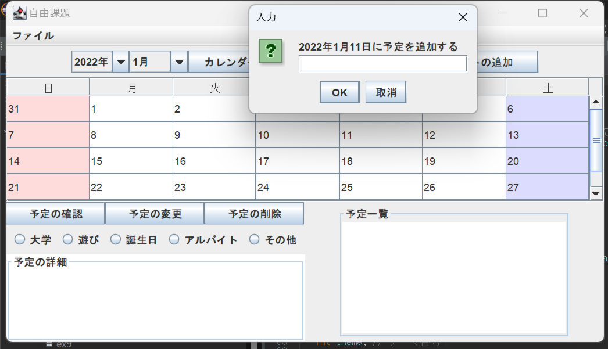
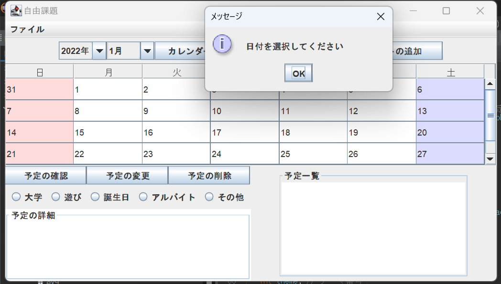
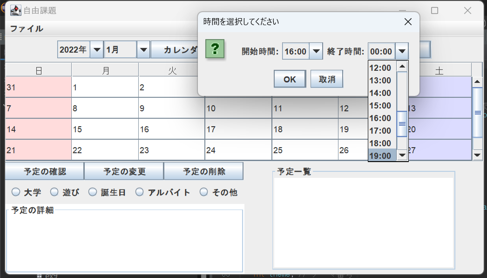
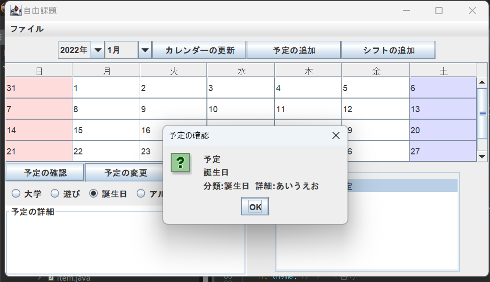
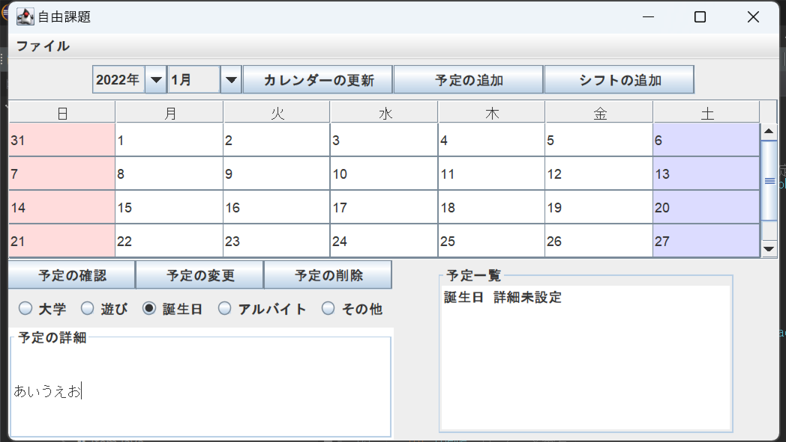
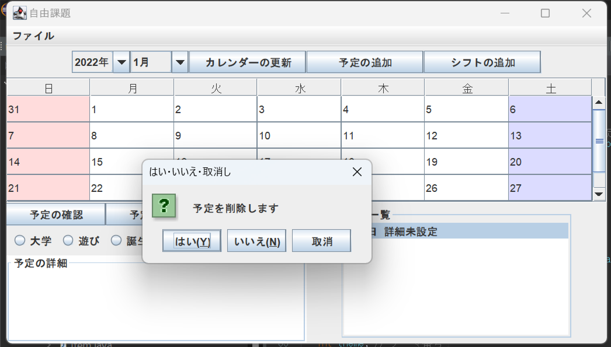
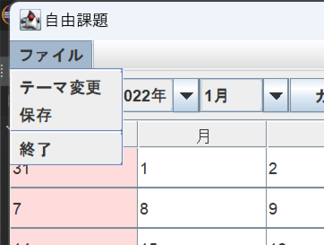
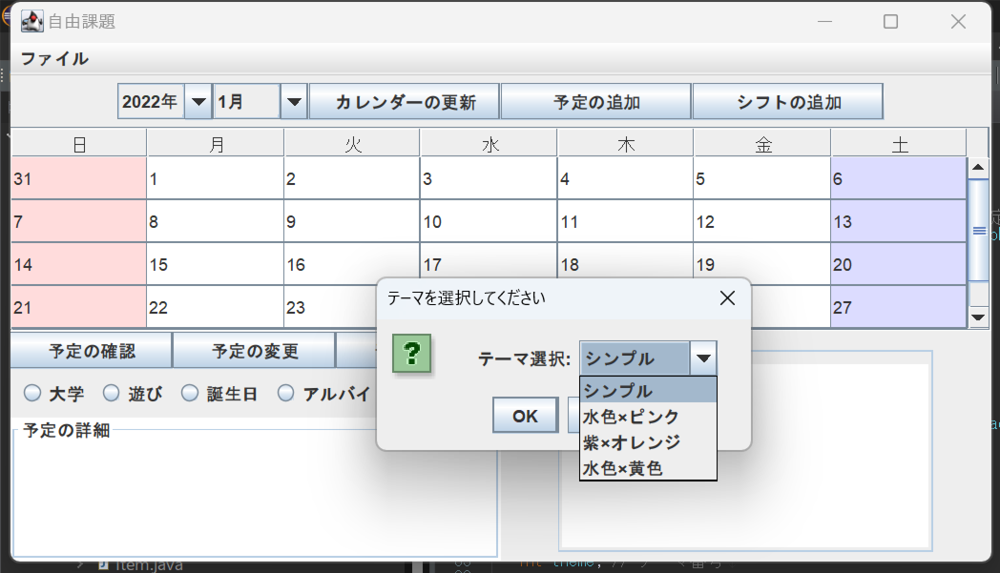
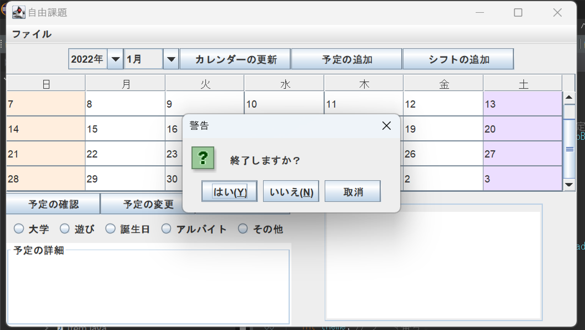

プログラムの概要
カレンダーに関する基本的な機能を複数実装した。実装内容は以下に示す通りである。
カレンダーの更新、予定やシフトの追加・確認・変更・削除、テーマカラーの変更、データの保存、プログラムの終了
- カレンダーの更新: カレンダーの表示を選択した月と年に更新する。
- 予定の追加: 選択した日に予定を追加する。
- シフトの追加: 選択した日にアルバイトの勤務予定時間を追加する。
- 予定の確認: 選択した予定の詳細を確認する。
- 予定の変更: 選択した予定の分類と詳細を設定する。
- 予定の削除: 選択した予定を削除する。
- テーマカラーの変更: カレンダーのテーマカラーを変更する。
- データの保存: データをファイルに保存する。
- プログラムの終了: プログラムを終了する。
プログラムの仕様および操作方法
プログラムで用いられている各種フィールドは以下に示す通りである。
ArrayList
- schedule: 全ての予定はこの配列に追加される。
JComboBox
- yearComboBox: カレンダーを表示する年を選択する。
- monthComboBox: カレンダーを表示する月を選択する。
- themeComboBox: テーマカラーを選択する。
- jobComboBox1: シフトの開始時間を選択する。
- jobComboBox2: シフトの終了時間を選択する。
JButton
- displayButton: カレンダーの更新を行うボタン。DisplayAction()によって操作が定義されている。
- addButton: 予定の追加を行うボタン。AddAction()によって操作が定義されている。
- jobButton: シフトの追加を行うボタン。JobAction()によって操作が定義されている。
- confirmButton: カレンダーの更新を行うボタン。ConfirmAction()によって操作が定義されている。
- updateButton: 予定の追加を行うボタン。DetailAction()によって操作が定義されている。
- removeButton: シフトの追加を行うボタン。RemoveAction()によって操作が定義されている。
JRadioButton
- radioButton1: 予定の分類に使用される。分類名＝大学
- radioButton2: 予定の分類に使用される。分類名＝遊び
- radioButton3: 予定の分類に使用される。分類名＝誕生日
- radioButton4: 予定の分類に使用される。分類名＝アルバイト
- radioButton5: 予定の分類に使用される。分類名＝その他
JTextField
- field: 予定の詳細を入力する。
JList
- list: DefaultTableModelと組み合わせて使用される。予定一覧を表示する。
JTable
- calendarTable: カレンダーを表示するためのテーブル。
JLabel
- monthLabel: 月のラベルを作成する。
DefaultTableModel
- tableModel: リストを管理する。
Calendar
- calendar: カレンダーの情報を取得する。
SimpleDateFormat
- sdf: 日付のフォーマットを保持している。

操作方法一覧
- カレンダーの更新: 左側にあるコンボボックスで年月を選択した後にこのボタンを押すと、カレンダーが選択した年月に合ったものに更新できる。
- 予定の追加: このボタンを押すとダイアログが表示され、予定名を入力することで選択した日に予定を登録することができる。 日付を選択していない場合は、日付選択を促すダイアログが表示される。  
- シフトの追加: このボタンを押すとダイアログが表示され、開始時間と終了時間を入力することで選択した日にアルバイトの勤務時間を登録することができる。 日付を選択していない場合は、日付選択を促すダイアログが表示される。 
- 予定一覧: 日付を選択した際、その日に登録されている予定とシフトが一覧で表示される。以下3種類の機能は、この予定一覧のリストの項目を選択している時のみ実行可能である。
- 予定の確認: このボタンを押すと、予定名と分類と詳細をダイアログで確認できる。 
- 予定の変更: ボタンの下にあるラジオボタンとテキストフィールドで分類と詳細を決めてからこのボタンを押すと、それらの情報が配列に保存され、反映される。 
- 予定の削除: このボタンを押すと、選択している項目を削除することができる。削除前に確認のダイアログが表示される。いいえor取り消しを押した場合は削除される、リストの選択状態が解除される。 
- テーマカラー: 左上のメニューバーから選択可能。ダイアログが表示され、コンボボックスから好きなカラーを選択すると、土日のセルの配色が変わる。(カレンダーを少しスライドする必要有？)  
- 保存: データをファイルに保存することができる。次回起動時に自動的にファイルが読み込まれ、元の状態に戻すことができる。
- 終了: プログラムを終了することができる。終了する前に確認のダイアログが表示される。 
プログラムのポイントおよび工夫点
本講義で学んだ内容を可能な限り活用できるよう、メニューバー、ボタン、ダイアログ、ファイル、リスト、テキストフィールド、テーブル、コンボボックス等、様々な仕組みを実装した。
GridLayoutやBorderLayoutを使用し、自然なUIになるように心掛けた。
カレンダーを実装するにあたって、プログラムが終了してもデータを保持できるよう読み込みと保存を実装した。
日付を選択していない時に注意のダイアログを出す等、細かい挙動にもこだわった。